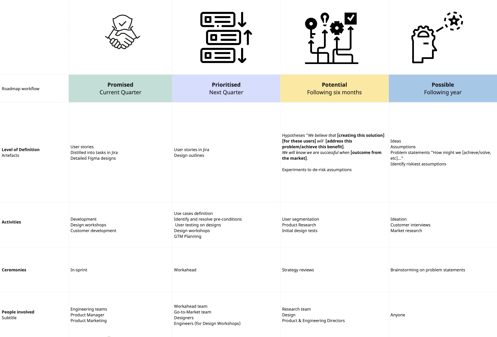
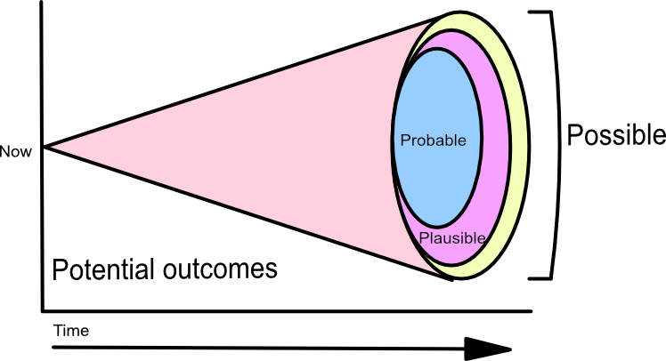
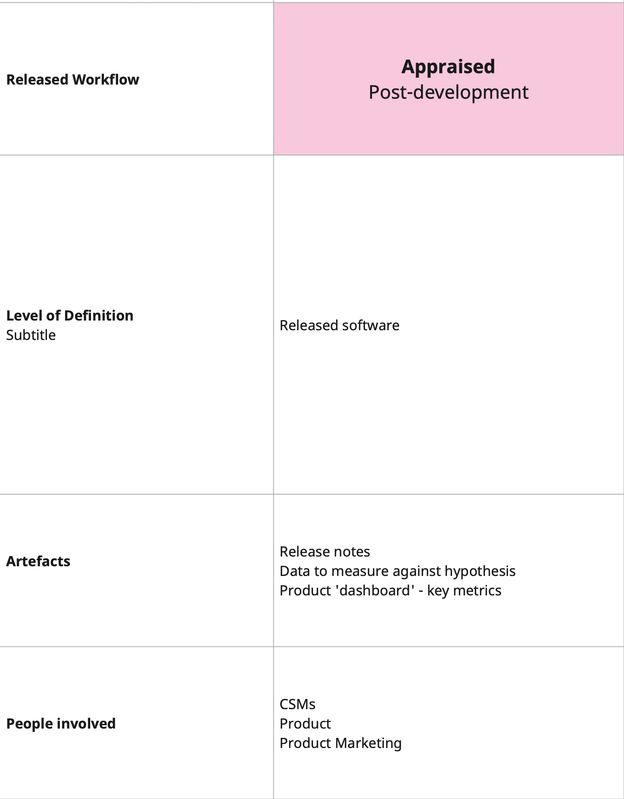

PandA - a framework for product stategy and building a coherent product
roadmap
How do you line up your quarterly goals, enable experimental thinking
and ensure you're aligned with the product strategy?

×
The PandA Framework
How do you decide where to invest in the short-term while acknowledging
the uncertainty of the future and the possible pivots you'll have to
make? In order to plan work further ahead, we have to make more
assumptions about future conditions as the
cone of uncertainty
widens.
How do you manage the trade-offs between commitments that teams are
expected to make, and the fact that we don't have a perfect view of the
future.

The Cone of Uncertainty
The PandA Prioritisation Framework
The PandA Prioritisation Framework aligns product roadmap and strategy
with more immediate goals. In order to do this, it divides the
short-term future into a series of stages where work can be
promised and prioritised. Further out,
work should be looked at as potential hypotheses to
test, and as we move into the more distant future, we think of all the
possibilities our product has.
For product that has been released, we appraise the
impact of the product and measure it against our original hypotheses. At
each stage, we ensure that we are aligned with our
organisation's broader strategy.
Steps in the PandA Framework
Promised
In the current quarter, the team should have agreed what they are
expected to deliver, i.e. promised work for release. The team can
distill user stories into value that they will create. Product
marketing can start to inform customers with confidence of upcoming
releases. At this stage, the work is well-defined, and there is a high
level of confidence about the solution being delivered.
Prioritised
Looking forward to the next quarter, Product Management is clarifying
the priorities for delivery. User stories are created, designs begin
to take their final shape through workshops involving the whole
product team so that as promises are delivered, the next priorities
are pulled into the team's orbit and delivery can begin. For all
prioritised work, if there are any Preconditions that need to be
delivered, e.g. data needs to be delivered by a platform or enabling
team, this should be noted and the delivery of this Precondition must
be aligned with the promise of the team to deliver the required
functionality.
Potential
As we look further into the future, the cone of uncertainty widens. We
don't know enough about what will be happening to be definitive about
what we should work on. Listening to customers about their needs and
how our product meets them (or fails to do so) is essential. Looking
this far ahead, we should be forming hypotheses about the future. A
well-formed hypothesis should include:
the potential solution being considered
the target audience
the benefits we believe will follow
measurable criteria that demonstrate success or failure
As there are many things we can potentially do, there should be quite
a few hypotheses generated. Prioritisation should be driven by:
understanding our riskiest assumptions
what experiments we can undertake to de-risk our hypotheses
user research on our hypotheses to seek alignment with customer
problems
the size of the bets we would like to make versus the potential
payoff
We might do this through user interviews, market research, or testing
such as A/B testing. We should be having regular strategy meetings and
reviewing the evidence uncovered by our research to inform our
hypotheses and prioritisation decisions.
You should always involve the entire product team in discussions
around potential work. This will give the engineers the opportunity to
raise any feasibility concerns or the required lead time to build
certain capabilities within the application, as well as contributing
valuable ideas. These will then inform the work to be prioritised by
the team.
Possible
Looking into the far future, say more than 9 - 12 months away, things
become even less certain. This far out, we should be asking very
general questions about where we might take our application. 'How
might we...' is a great framing tool for thinking of all the ways that
the product could serve customers in new and interesting ways.
As we think about the possibilities for our product, the strongest of
those, or the most aligned with our goals can form the basis of
hypotheses and be pulled into the 'Potential' zone for further
investigation. Not all possibilities will become potential ideas for
the application, just like not all the potential ideas will
necessarily be hypothesised.
Appraised
Once the software has been released (the team has delivered on its
promises), we need to appraise whether it has had the desired impact.
We should observe usage of the software in action and measure whether
it has achieved the objectives we set out when creating our
hypotheses. Customer feedback will help us learn how well we are
doing. Whatever we learn from this data should then be applied to
further potential work and possibilities for the product. Thus, we can
see the framework operates as a cycle based on information and work
flow.

The Appraised step
×
PandA visualised as a cycle
×
Alignment
Bearing in mind the cone of uncertainty, and everything you don't know
the further into the future you look, it's important to ensure that
you constantly check with alignment of your potential outcomes with
your product and business strategy.
In the short-term (promises and priorities) should be aligned with
Objectives and Key Results (OKRs), Key Performance Indicators (KPIs)
or the planning framework in use by the organisation. Possibilities
and potential pieces of work should be aligned with your business
strategy.
The goal of the framework is to ensure alignment of outcomes with
strategy. We favour alignment over local optimisations, which can
occur when teams focus only on the immediate (promises and priorities)
or don't check for alignment between their potential work and the
goals of the organisation.
Framework as seen with the cone of uncertainty
In summary
The PandA framework offers a solution to some of the problems product
team face when asked to balance the short-term objectives of the
organisation with longer-term goals and the uncertainties inherent in
software development. It's a lightweight framework, bridging the
tactical and strategic gaps that often exist between execution and
business strategy.
Using the framework will enable teams to
focus on immediate work
think in outcomes
measure their impact against those planned outcomes
define their upcoming work pragmatically
ensure their work is aligned with the business strategy.
The framework enables teams to create and own a roadmap that gives a
sense of direction without being overly prescriptive, while inviting
team experimentation and discovery.